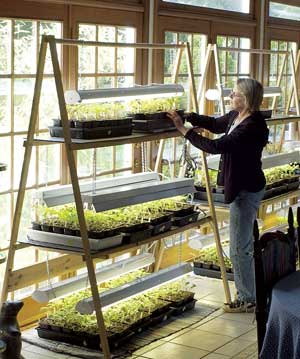

WALTER CHANDOHA
Kennedy starts tomato seeds using light stands in front of sunny, south-facing windows. Each stand holds up to 200 seedlings. Her husband, Bruce, made the stands using 4-foot shop lights. The lights are adjustable, allowing her to position them about 1 inch above the seedlings’ topmost leaves. Automatic timers turn on the lights for 18 hours daily.